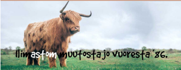

Rehupiikles on suomalainen humoristinen yhtye, joka parodioi tunnettuja kappaleita vahvalla maaseutu- ja murreotteella. Yhtye on perustettu vuonna 1986 ja on siitä lähtien viihdyttänyt yleisöä ympäri Suomen.
Aki, Pasi, Jukka, Jari, Matti, Pekka, Kari, sekä lukuisia muita kokoonpanon varrella mukana olleita soittajia ja laulajia.